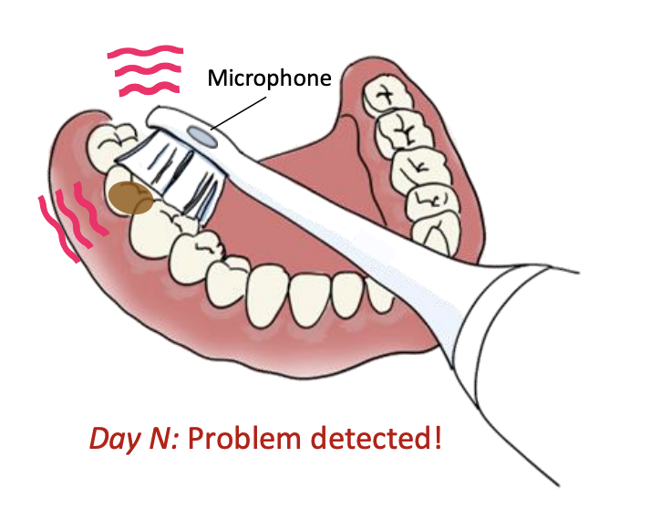

Project ToMoBrush: Exploring Dental Health Sensing using a Sonic Toothbrush
|
 |
|
|
| This paper presents ToMoBrush, a dental health sensing system that explores using off-the-shelf sonic toothbrushes for dental condition detection. Our solution leverages the fact that a sonic toothbrush produces rich acoustic signals when in contact with teeth, which contain important information about each tooth's status. ToMoBrush extracts tooth resonance signatures from the acoustic signals to characterize the dental condition of each tooth. We further develop a data-driven signal processing pipeline to detect and discriminate different dental conditions. We evaluate ToMoBrush on 19 participants and dental-standard models for detecting common dental problems including caries, calculus, and food impaction, achieving a detection ROC-AUC of 0.90, 0.83, and 0.88 respectively. Interviews with dental experts further validate ToMoBrush's potential in enhancing at-home dental healthcare. |
Citation
- ToMoBrush: Exploring Dental Health Sensing using a Sonic Toothbrush, Kuang Yuan, Mohamed Ibrahim, Yiwen Song, Guoxiang Deng, Robert A. Nerone, Suvendra Vijayan, Akshay Gadre, and Swarun Kumar, UbiComp 2024 [PAPER]